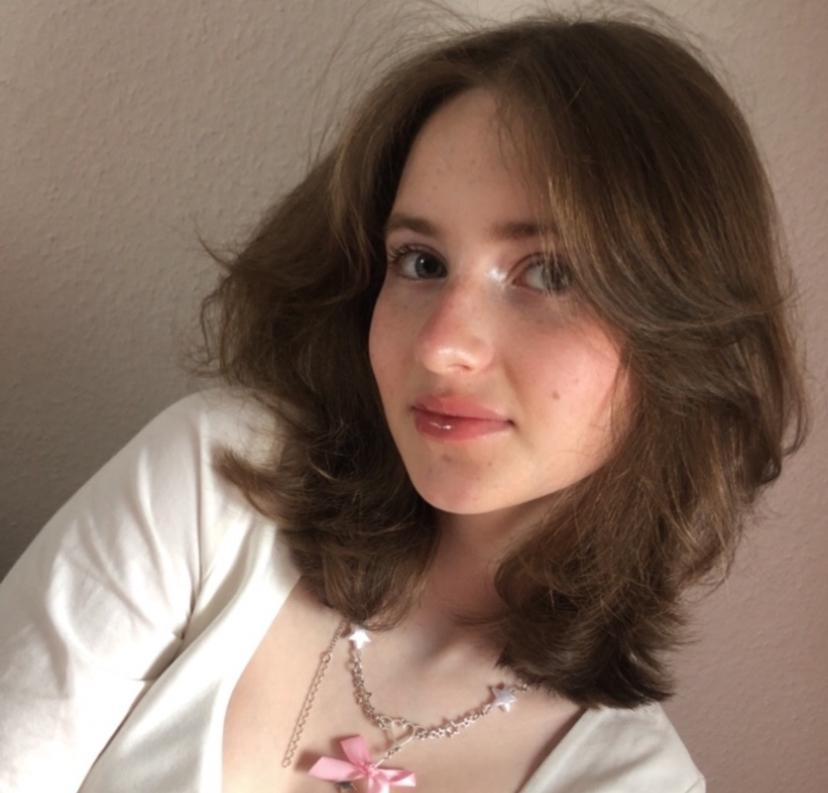

❇ Über mich

Hallo, ich bin Sofie, eine Schülerin der 9. Klasse. Mein Interesse gilt der Informatik, verschiedenen Sprachen sowie sozialen und künstlerischen Bereichen. Besonders begeistere ich mich für Musik und Kunst. Eine große Leidenschaft von mir ist Mode, Make-up und Cosplay. Ich liebe es, kreative und einzigartige Outfits zu entwerfen und verschiedene Looks auszuprobieren. Darüber hinaus interessiere ich mich sehr für Design.
❇ Bildungsweg
- Heinrich Heine Gymnasium Köln, 9. Klasse
- Differenzierungskurs: Italienisch
- Arbeitsgemeinschaften: Theater, Social Media
❇ Fähigkeiten und Kenntnisse
- Teamarbeit: Erfahrung in der Zusammenarbeit mit Mitschülern bei Projekten und Gruppenarbeiten.
- Kommunikationsfähigkeit: Mündliche Kommunikation mit klarem Ausdruck.
- Empathie: Fähigkeit, die Perspektiven anderer zu verstehen und darauf einzugehen.
- Computerkenntnisse (z.B.Grundkenntnisse in HTML und CSS)
- Sprachen: Russisch (Muttersprache), Englisch (Grundkenntnisse), Deutsch (Grundkenntnisse)
❇ Erfahrungen
- Schülerpraktikum bei affilicon im Jahr 2024
- Musikschule (seit 2017), Klavier, Solfeggio, Vokalensemble
- Emotionaler Beistand: Ich habe meinen Freunden oft emotional geholfen, indem ich ihnen zugehört und sie in schwierigen Zeiten unterstützt habe. Diese Erfahrung hat meine Empathie und meine Fähigkeit, andere zu verstehen und zu unterstützen, gestärkt. Ich habe meinen Freunden auch Tipps gegeben.
- Editing: 6 Jahre mit CapCut, 3 Jahre mit Alight Motion
- Zeichnen: 8 Jahre, Digital: 4 Jahre
❇ Hobbys und Interessen
- Musik: Klavier, Gesang, Solfeggio
- Kunst: analog und digital, Analog mit Bleistift
- Sport: Ice Skaten
- IT: Videospiele, Coden, Social Media, Marketing, Editing (Videos), Digitale Kunst
- Visuelles: Mode, Fashion, Make up, Cosplay, Design
❇ Kontakt
Sie können mich per E-Mail unter sofie.vasiliev@gmail.com oder telefonisch unter +491607814479 erreichen.